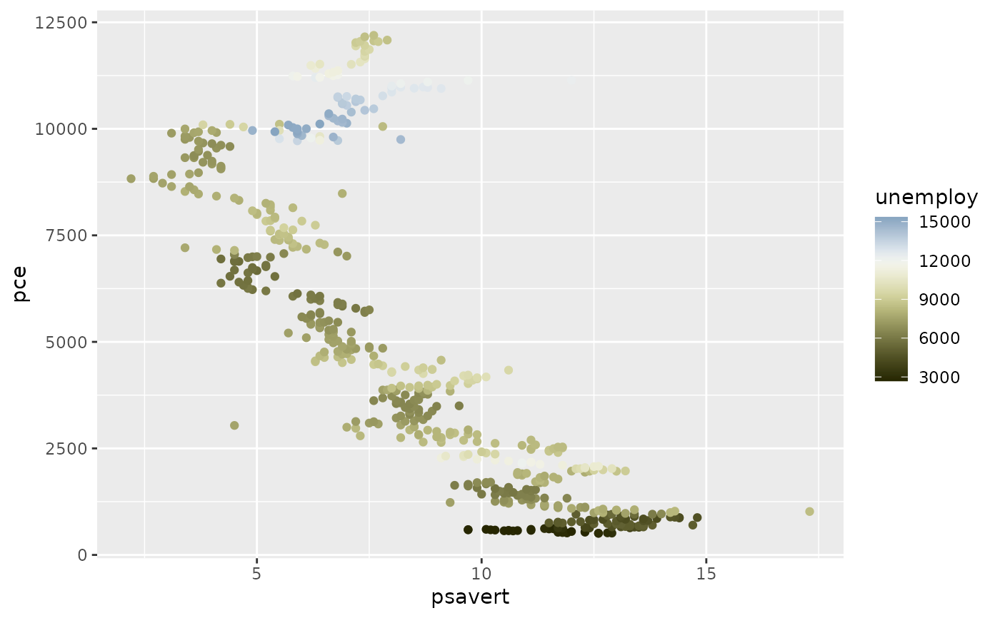
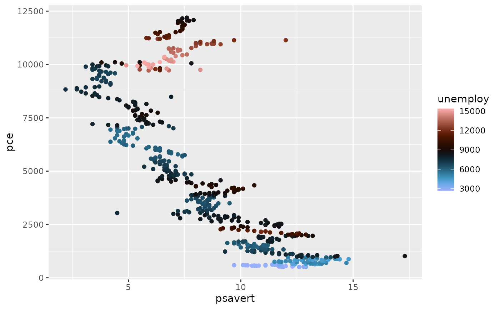

Fabio Crameri's bam Diverging Colour Scheme
Usage
scale_colour_bam(
...,
reverse = FALSE,
range = c(0, 1),
midpoint = 0,
discrete = FALSE,
aesthetics = "colour"
)
scale_color_bam(
...,
reverse = FALSE,
range = c(0, 1),
midpoint = 0,
discrete = FALSE,
aesthetics = "colour"
)
scale_fill_bam(
...,
reverse = FALSE,
range = c(0, 1),
midpoint = 0,
discrete = FALSE,
aesthetics = "fill"
)
scale_edge_colour_bam(
...,
reverse = FALSE,
range = c(0, 1),
midpoint = 0,
discrete = FALSE,
aesthetics = "edge_colour"
)
scale_edge_color_bam(
...,
reverse = FALSE,
range = c(0, 1),
midpoint = 0,
discrete = FALSE,
aesthetics = "edge_colour"
)
scale_edge_fill_bam(
...,
reverse = FALSE,
range = c(0, 1),
midpoint = 0,
discrete = FALSE,
aesthetics = "edge_fill"
)Source
Crameri, F. (2021). Scientific colour maps. Zenodo, v7.0. doi:10.5281/zenodo.4491293
Arguments
- ...
Arguments passed to
ggplot2::continuous_scale().- reverse
A
logicalscalar. Should the resulting vector of colours be reversed?- range
A length-two
numericvector specifying the fraction of the scheme's colour domain to keep.- midpoint
A length-one
numericvector giving the midpoint (in data value) of the diverging scale. Defaults to0.- discrete
A
logicalscalar: should the colour scheme be used as a discrete scale?- aesthetics
A
characterstring or vector of character strings listing the name(s) of the aesthetic(s) that this scale works with.
Value
A continuous scale.
Interpolation
If more colours than defined are needed from a given scheme, the colour coordinates are linearly interpolated to provide a continuous version of the scheme.
Note that the default colour for NA can be overridden by passing
a value to ggplot2::continuous_scale().#'
References
Crameri, F. (2018). Geodynamic diagnostics, scientific visualisation and StagLab 3.0. Geosci. Model Dev., 11, 2541-2562. doi:10.5194/gmd-11-2541-2018
Crameri, F., Shephard, G. E. & Heron, P. J. (2020). The misuse of colour in science communication. Nature Communications, 11, 5444. doi:10.1038/s41467-020-19160-7
See also
Other diverging colour schemes:
scale_crameri_berlin,
scale_crameri_broc,
scale_crameri_cork,
scale_crameri_lisbon,
scale_crameri_roma,
scale_crameri_tofino,
scale_crameri_vanimo,
scale_crameri_vik,
scale_tol_BuRd,
scale_tol_PRGn,
scale_tol_sunset
Other Fabio Crameri's colour schemes:
scale_crameri_acton,
scale_crameri_bamO,
scale_crameri_bamako,
scale_crameri_batlowK,
scale_crameri_batlowW,
scale_crameri_batlow,
scale_crameri_berlin,
scale_crameri_bilbao,
scale_crameri_brocO,
scale_crameri_broc,
scale_crameri_buda,
scale_crameri_bukavu,
scale_crameri_corkO,
scale_crameri_cork,
scale_crameri_davos,
scale_crameri_devon,
scale_crameri_fes,
scale_crameri_grayC,
scale_crameri_hawaii,
scale_crameri_imola,
scale_crameri_lajolla,
scale_crameri_lapaz,
scale_crameri_lisbon,
scale_crameri_nuuk,
scale_crameri_oleron,
scale_crameri_oslo,
scale_crameri_romaO,
scale_crameri_roma,
scale_crameri_tofino,
scale_crameri_tokyo,
scale_crameri_turku,
scale_crameri_vanimo,
scale_crameri_vikO,
scale_crameri_vik
Examples
data(economics, package = "ggplot2")
ggplot2::ggplot(economics, ggplot2::aes(psavert, pce, colour = unemploy)) +
ggplot2::geom_point() +
scale_colour_broc(reverse = TRUE, midpoint = 12000)

ggplot2::ggplot(economics, ggplot2::aes(psavert, pce, colour = unemploy)) +
ggplot2::geom_point() +
scale_colour_berlin(midpoint = 9000)
